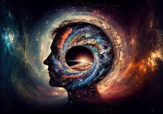

Você conhece mesmo o universo?
Nosso Universo foi criado há 13,8 bilhões de anos, com o Big Bang. No começo, não havia estrelas, nem galáxias ou seres vivos. Apenas hidrogênio, hélio e muita energia. As primeiras estrelas e galáxias provavelmente surgiram cerca de 200 milhões de anos depois do Big Bang.
BigBang
A teoria do Big Bang atribui a origem do Universo a uma grande explosão cósmica ocorrida há quase 14 bilhões de anos. A teoria do Big Bang descreve a origem do Universo a partir da expansão violenta de uma partícula muito densa e extremamente quente que teve início há 13,8 bilhões de anos, aproximadamente.

Como vai ser o fim do Universo?
Bilhões de anos passarão e com o aumento da distância entre as estrelas, o universo vai ficando cada vez mais frio. Podemos dizer que o universo e todas as suas transformações, seus grandes eventos, seus espetáculos luminosos, estão se cansando e em algum momento, a energia do universo vai se extinguir.
sim
não talvez